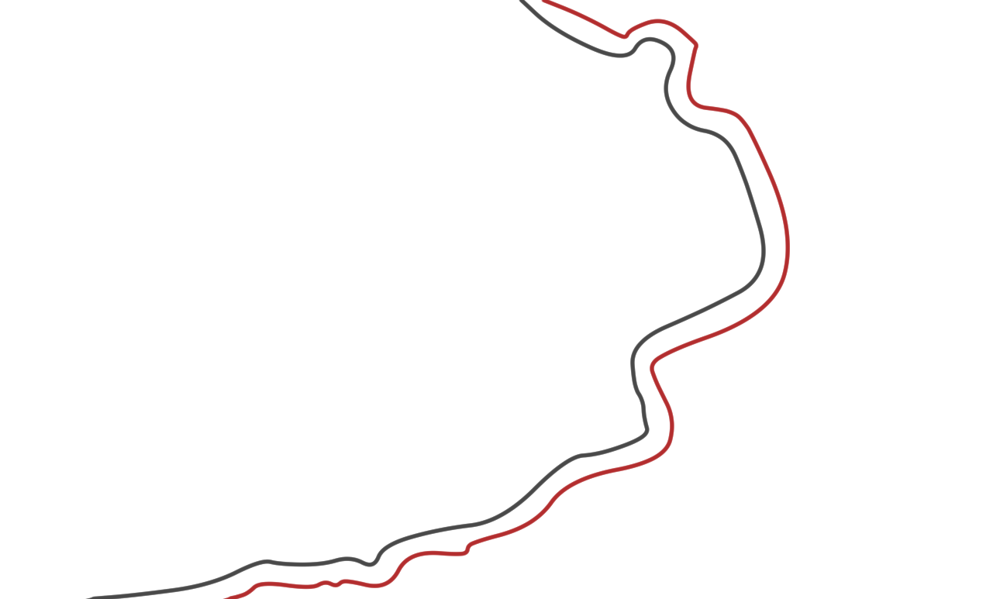
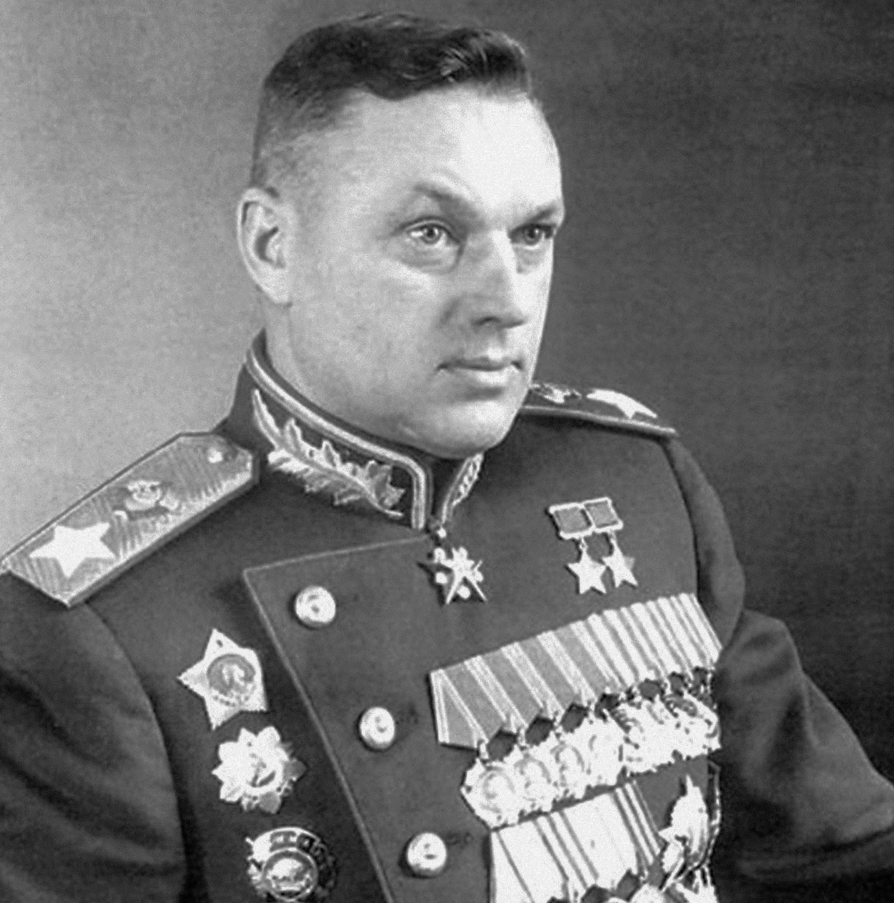
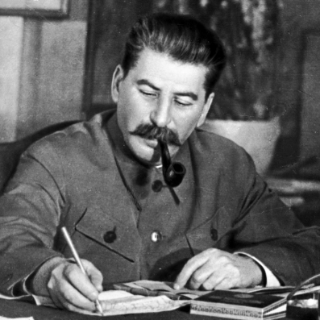
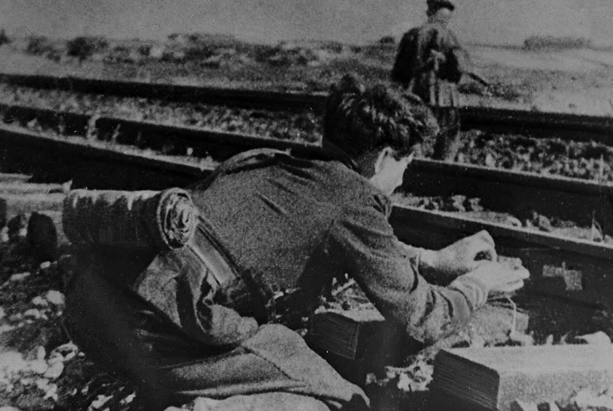
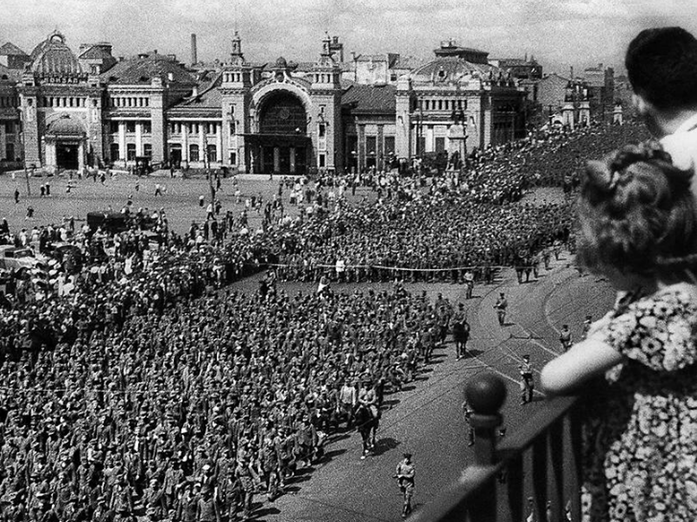
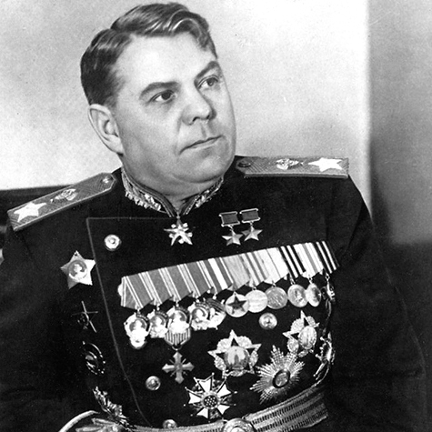
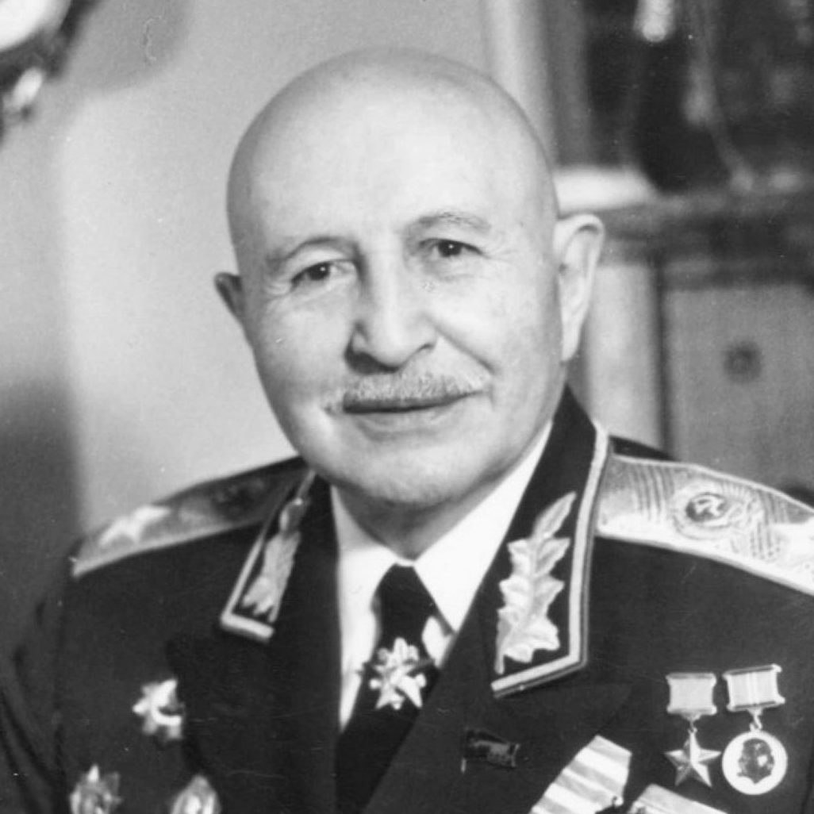
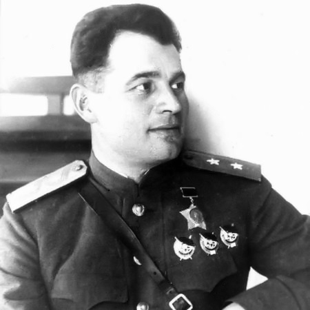
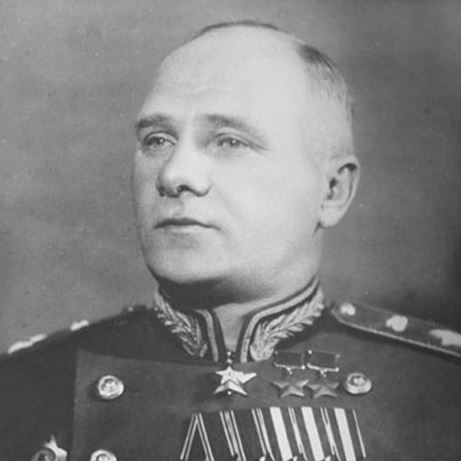

Гроссмейстерский триумф советского военного искусства
23 июня — 29 августа 1944 годаК началу лета 1944 года линия советско-германского фронта приобрела причудливые очертания. В центре, на территории оккупированной Белоруссии, образовался гигантский выступ площадью около 250 тысяч квадратных километров, глубоко вдававшийся в советские позиции. В штабных документах этот стратегический плацдарм получил название «Белорусский балкон». Его восточная граница проходила угрожающе близко от Москвы — всего в 80 километрах от Смоленска.
Однако немецкое Верховное командование сухопутных войск и лично Адольф Гитлер пребывали в опасной иллюзии безопасности. Аналитики вермахта были твердо убеждены: летом Красная Армия нанесет свой главный удар на юге. Логика немцев казалась железной — Советскому Союзу необходимо отрезать Германию от румынских нефтяных полей и прорваться на Балканы.
Белорусское же направление считалось второстепенным. Причина крылась в географии: сложнейшая лесисто-болотистая местность Полесья со множеством рек казалась абсолютно непригодной для глубоких прорывов и действий крупных танковых соединений.

«Гитлер и его Генеральный штаб были загипнотизированы ожиданием наступления русских на юге... То, что произошло потом в Белоруссии, стало для нас громом среди ясного неба. Никто не верил, что русские смогут провести крупномасштабное наступление через эти непроходимые болота».
Классическая военная стратегия непреклонно требовала концентрации сил для нанесения одного максимально мощного главного удара. Однако Рокоссовский, изучив топи под Бобруйском, настоял на двух главных ударах равной силы. Болотистая почва не позволила бы сосредоточить всю бронетехнику на одном участке, а два синхронных удара парализовали бы немецкие резервы.


Гром артиллерии регулярной армии предварила неслыханная по масштабам диверсионная акция, скрупулезно спланированная штабом партизанского движения.

Массово подрывались водокачки. Без воды паровозы превращались в груду железа, войска не могли маневрировать и подвозить снаряды.
Взлетали на воздух мосты и железнодорожные стрелки. Немецкие дивизии оказались скованы в своих секторах еще до перехода танков в атаку.
Вырезались километры телефонного и телеграфного кабеля. Хайнц Гудериан признавал: «Мы оказались в положении слепых и глухих».
Стратегическая операция не была монолитным ударом — она представляла собой сложный часовой механизм из взаимосвязанных фронтовых операций.
Войска 1-го Прибалтийского (И. Х. Баграмян) и 3-го Белорусского (И. Д. Черняховский) фронтов нанесли сокрушительный удар на северном фасе «балкона». 25 июня сомкнулось стальное кольцо вокруг витебской группировки. В «Витебском котле» полностью уничтожены 5 немецких дивизий (35 тыс. человек). Одновременно взят узел Орша, открывший автостраду на Минск.
В центре 2-й Белорусский фронт генерала Г. Ф. Захарова прорвал глубоко эшелонированную оборону немцев по рекам Проня и Днепр. Сходу форсировав реку, советские войска 28 июня освободили Могилёв, лишив противника возможности закрепиться на важнейшем водном рубеже.
Блестяще сработал план Рокоссовского на южном фланге (1-й Белорусский фронт). Два мощных сходящихся удара через гати и болота застали 9-ю немецкую армию врасплох. 27 июня ловушка захлопнулась: в котле оказались 6 дивизий вермахта (около 40 тысяч человек). Попытки прорыва пресекались штурмовой авиацией.
Прорвав фланги, советские мобильные соединения (в том числе 5-я гвардейская танковая армия П. А. Ротмистрова) устремились к столице Белоруссии, беря отступающие части в гигантские клещи. 3 июля танки ворвались в Минск. Заблокирована и уничтожена 105-тысячная группировка 4-й немецкой армии.
«То, что произошло между Днепром и Березиной летом 1944 года, было не просто поражением. Это было уничтожение целой армии, катастрофа, превзошедшая Сталинград»
Советские войска освободили Вильнюс (13 июля) и Каунас (1 августа). Войска 1-го Прибалтийского фронта прорвались к Рижскому заливу, отрезав немецкую группу армий «Север» от Восточной Пруссии. Темпы преследования достигали 20–30 километров в сутки.
Войска Рокоссовского освободили Брест и стремительно вышли к реке Висле на территории Польши. Сходу форсировав реку, советские части захватили стратегически важные плацдармы (Магнушевский и Пулавский). К концу августа фронт отодвинулся на запад на 600 километров.

Чтобы продемонстрировать всему миру катастрофу вермахта, 17 июля 1944 года в Москве состоялась операция «Большой вальс». По улицам столицы провели огромную колонну немецких военнопленных, захваченных в Белоруссии — 57 600 человек. Во главе колонны шли 19 генералов вермахта при орденах — те самые люди, что мечтали пройти по Москве победным маршем в 1941-м.
Зрители наблюдали за шествием в гробовом молчании. А сразу за пленными ехали поливальные машины, демонстративно смывая с асфальта «фашистскую грязь».
Многие западные историки пытались сгладить горечь поражения путем прямой манипуляции цифрами. Они утверждают, что в группе армий «Центр» было всего около 486–850 тысяч человек. Секрет лжи прост: немецкие мемуаристы считали исключительно «боевые пайки» — то есть только солдат стрелковых рот на передовой. Из расчетов намеренно исключались артиллеристы, связисты, саперы, штабы, гигантские тыловые службы и части СС. Реальная группировка противника составляла от 1,2 до 2 миллионов человек.
Поражение было тотальным. Только безвозвратные потери немецкой стороны оцениваются в 400 000 – 550 000 человек, что значительно превышает потери вермахта под Сталинградом. Полностью, вместе со штабами, было уничтожено 17 дивизий и 3 бригады. Безвозвратные потери четырех фронтов Красной Армии составили 178 507 человек — около 7,6% от общей численности советских войск, участвовавших в операции. Это убедительно доказывает высочайший уровень полководческого мастерства.
Вермахт понес тяжелейшие потери за всю свою историю. Огромная брешь в центре Восточного фронта (около 400 км по фронту и 600 км в глубину) не могла быть закрыта.
Красная Армия полностью освободила Белоруссию, часть Прибалтики и восточные районы Польши, выйдя на ближние подступы к границам самой Германии.
Наступление заставило Гитлера экстренно стягивать резервы с Запада на Восток, спасая фронт от полного обрушения. Это сорвало планы удара по англо-американским войскам и значительно облегчило задачу союзникам во Франции (операция «Оверлорд»).
Операция стала классическим примером реализации теории «глубокой наступательной операции». Идеальная координация пехоты, танковых армий, авиации и партизан доказала, что Красная Армия — это высокотехнологичная и непреодолимая сила.
«В истории войн трудно найти операцию, которая по своим масштабам, стремительности и результатам могла бы сравниться с Белорусской. Она была проведена с исключительным искусством и стала подлинным шедевром стратегии».
Этот триумф стал звездным часом советских военачальников.



